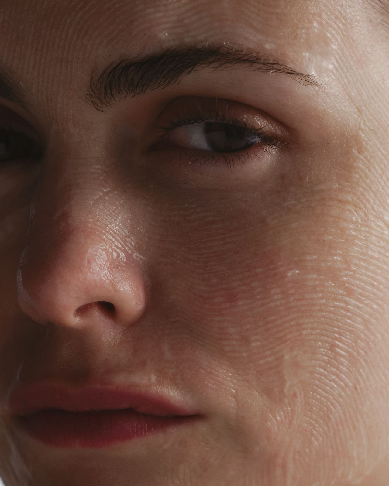

Food for your Face

Hadiyah Daché, licensed cosmetologist & esthetician
Skingredients
5 min
← All articlesThe Book →Friendly reminder: this post contains affiliate links, which help support the Glowdega Archive. If you buy through them, I may earn a commission at no extra cost to you.
Originally published June 2017, Updated April 2025.
Now that we know what we can avoid in our DIY mask, which ingredients are safe for your face? You may be surprised (or relieved) to learn that a vast majority of cosmetic products used in spas contain many of the same derivatives from plants and fruits that may be in our kitchens. The main difference between what we buy in the grocery store and Sephora is the efficacy in the ingredients. With this in mind, know that your DIY facial mask can't quite garner the exact same results even if you are using a lot of the same "base" ingredients. (But you can get some benefits that are perfect for when you're in-between appointments with your esthetician.)
Beneficial Ingredients for DIY Face Masks
Raw Honey
Raw honey remains one of the best natural ingredients for your skin. It's a natural humectant that is great for dull, dry skin and for those who are prone to breakouts. Current dermatological research confirms honey's antimicrobial properties that can help reduce inflammation and acne-causing bacteria.
According to dermatologists, honey provides multiple benefits:
Antibacterial properties that can help with acne-prone skin
Natural moisturizing effects to combat dryness
Supports wound healing through its natural enzymes
Contains antioxidants that may help reduce signs of aging
For best results, use raw, unpasteurized honey in your DIY masks, as it retains more of the beneficial enzymes and nutrients.
Avocado
Avocados continue to be excellent for DIY face masks. Rich in healthy fats and vitamins, avocados provide deep moisturization and nourishment. They're naturally high in lutein, an antioxidant carotenoid that protects skin from environmental damage.
Research supports avocado's benefits for skin:
Contains vitamins A, D, and E that nourish skin
The natural oils help restore skin's moisture barrier
May help boost collagen production
Provides protection against UV damage (though it's not a replacement for sunscreen)
For dry, dehydrated, or mature skin types, avocado makes an excellent mask base.
Turmeric
Turmeric continues to be validated by research as an effective skincare ingredient. This anti-inflammatory spice contains curcumin, which has powerful antioxidant properties.
Recent dermatological studies support turmeric's benefits:
Anti-inflammatory properties help reduce redness and irritation
Antibacterial qualities that may help with acne
Antioxidant effects that combat free radical damage
May help even skin tone and reduce hyperpigmentation
One important note: Turmeric can temporarily stain skin yellow, especially for lighter skin tones. Use small amounts (1/4 to 1/2 teaspoon) in your masks and always do a patch test first. To avoid staining, don't leave turmeric masks on for more than 10-15 minutes.
Colloidal Oatmeal
While regular breakfast oatmeal was mentioned with some uncertainty in the original post, current research strongly supports the use of colloidal oatmeal in skincare.
Colloidal oatmeal is finely ground oatmeal that, when mixed with water, forms a soothing protective barrier on the skin. The FDA has officially recognized it as a skin protectant, and numerous studies confirm its benefits:
Anti-inflammatory properties that soothe irritated or sensitive skin
Contains compounds that help maintain skin's moisture barrier
Gentle exfoliation of dead skin cells
Can help relieve conditions like eczema, psoriasis, and dry skin
To use oatmeal effectively in DIY masks, grind whole oats into a fine powder using a coffee grinder or high-powered blender before mixing with other ingredients. This creates a more effective colloidal form that's similar to what's used in commercial products.
Ingredients to Approach with Caution or Avoid
Apple Cider Vinegar (Not Recommended)
The original post recommended apple cider vinegar (ACV) for its antiseptic and anti-fungal properties. However, current dermatological research suggests using ACV directly on the face can be problematic:
Its high acidity (pH of 2-3) can disrupt skin's natural pH balance
May cause irritation, redness, or chemical burns, especially on sensitive skin
Can damage the skin barrier with prolonged use
Results from studies on ACV for acne and other skin conditions are mixed
If you still want to try ACV in skincare, always dilute it significantly (at least 1 part ACV to 4 parts water), do a patch test first, and use very sparingly. For most people, there are safer alternatives for addressing acne and oiliness, such as products containing salicylic acid or tea tree oil.
Ghee (Limited Evidence)
While ghee (clarified butter) was recommended in the original post for its moisturizing properties and lauric acid content, there's limited scientific evidence supporting its use in facial skincare. Ghee is comedogenic (can clog pores) for many skin types and might lead to breakouts.
For those who want the benefits of fatty acids in their skincare:
Consider non-comedogenic plant oils like jojoba oil, which more closely resembles human sebum
Rosehip oil provides similar vitamin content with less risk of clogging pores
For acne-fighting properties, tea tree oil offers better-researched antimicrobial benefits
Gelatin (Approach with Caution)
Gelatin was mentioned for pore-tightening effects, but modern dermatology offers mixed reviews:
While it can create a temporary tightening effect, it may also over-dry the skin
Can be harsh for sensitive skin types
May trigger allergic reactions in some individuals
Vegan alternatives like agar-agar provide similar benefits without animal products
If you want the tightening effects of gelatin, consider alternatives like egg white masks (if not allergic) or clay-based masks, which have better evidence for tightening and clarifying benefits.
Better Alternatives for Traditional Masks
For Exfoliation
Instead of harsh physical exfoliants, consider:
Finely ground oatmeal (colloidal oatmeal)
Brown sugar mixed with honey (for lips and body, less ideal for facial skin)
Enzyme-rich fruits like papaya or pineapple (use cautiously and briefly)
For Hydration and Moisture
Honey mixed with avocado
Greek yogurt (contains lactic acid, a gentle chemical exfoliant)
Aloe vera gel (pure, without added fragrance or alcohol)
For Brightening
Turmeric in small amounts
Plain yogurt, which contains gentle lactic acid
Licorice root extract (available at many natural food stores)
For Acne-Prone Skin
Honey mixed with a small amount of turmeric
Tea tree oil (heavily diluted with a carrier oil such as jojoba)
Clay masks with bentonite or kaolin clay
Professional Advice
Always remember that homemade face masks should be used as occasional treatments rather than daily skincare solutions. For persistent skin concerns like acne, hyperpigmentation, or signs of aging, it's best to consult with a dermatologist for personalized advice and treatments.
Patch test any new ingredient by applying a small amount to your inner forearm or behind your ear, and wait 24 hours to check for any adverse reactions before applying to your entire face.
With these research-backed ingredients and proper application, you can enjoy the benefits of natural skincare while keeping your skin healthy and protected.
What are your favorite natural ingredients for DIY masks? Share your experiences and recipes in the comments below!